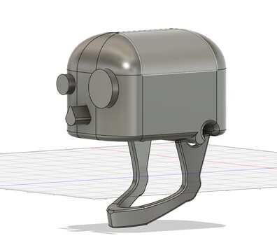
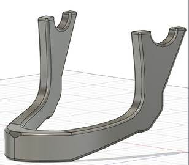
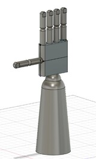

The 3-D modelling starts with a concept, a simple idea of what you want to do. In our case, a prothesis is something more complex just because the measurements vary from person to person.
The shortened lesson: neurons communicate via both electrical signals and chemical signals. The electrical signals are action potentials, which transmit the information from one neuron to the other.
An amplifier/electronic amplifier or amp is an electronic device that can increase the magnitude of a signal (a time-varying voltage or current). It may increase the power significantly or its main effect may be to boost the voltage or current (power, voltage or current amplifier). It is a two-port electronic circuit that uses electric power from a power supply to increase the amplitude of a signal applied to its input terminals, producing a greater amplitude signal at its output. (whoa!....)
PROJECT 1- BIONIC JAW
made by Lazar Matei
Besides the general part, the jaw is roughly 80% made out of aluminium. The other 20% part consists of a bone-like material so the body doesn't reject the prosthetic.


It is represented by a single piece so it would be more resistant.
In future versions, I plan to put touch and thermal senzors where the teeth would be placed in order to have a more natural feeling. To top this off, in the teeth-holes will be put a flexible material to imitate their ligaments.
PROJECT 2- BIONIC ARM
also made by Lazar Matei
As I said in the introduction, every joint moves how it's supposed to. Each finger contains 3 moving parts which are the phalanges. The middle and the proximal one move according to what are they attached to and what is attached to them. The palm is flexible in order to mimic the natural one.


For an easier accommodation for the brain, the hand will sense pressure and thermal changes using the same sensors mentioned in the jaw's description.
PROJECTS 1 and 2 - Software
made by Moga Karina
As this whole business' purpose is, we want to turn the dream every disabled person has into a reality. To do such a thing, the team is going to use our software systems abilities to make the bionic hand and jaw functionable.
Our software system will allow to customize gestures implemented by the prosthesis through an application on a personal computer and provides the opportunity to use a bionic prosthesis for those people whose nerve endings were damaged and are no longer able to conduct neural impulses. In the developed system, it was possible to configure up to 1000 gestures, which the user can independently create and modify. For safety measures, it was tested on several patients, and we can guarantee they were extremely happy.

The aim of this work is the development, research and testing of the hardware software system of an automated reprogrammable bionic prosthesis of the hand, with modular control. To control the bionic prosthesis, it will be possible to use controls based on the graphical user interface, voice control, as well as using myoelectric sensors. The presented interfaces will convert the recognized prosthesis commands into control signals for the movers to form gestures for the prosthetic hand. In addition to providing the basic functions of the prosthesis, such as squeezing individual fingers and the arm, the modular control approach will allow the user to independently configure and add new functionality for personal use by creating or editing gestures implemented by the prosthesis.

DESCRIPTION OF THE SYSTEM:
The software part of the control system is the interface of the system's interaction with the user and provides the ability to control the prosthetic hand, to create new actions performed by the prosthesis, and to change the current ones.

1. Providing messaging with user interface. Bluetooth is used as the transmission interface, as Wireless connection is required both on a mobile device and on a personal computer.
2. Receiving and processing readings of myoelectric sensor. To read the readings from the sensor, the ADC (the digital converter) is built into the microcontroller with a sampling frequency of 160 Hz (maximum sensor frequency is 60 Hz);
3. Storage and processing of gestures programmed on a personal computer. Gestures are stored on the SD card located in the prosthesis.
4. Management of actuators for the full-scale model. In particular, the display of information for the user, engine driver control via CAN bus.
User interaction with prostheses is carried out using two applications. The first is the Hand Control desktop application, which provides the user with the ability to reprogram the actions performed by the prosthetic arm. The second is an android application that acts as a control device for the prosthetic arm. It contains the choice of the prosthesis operating mode, sending a request for the execution of gestures, as well as the implementation of voice control. The desktop application is developed in C#.
Why is our system different than others?
A lack of feedback has not been found, there are numerous commands ready to be used and the period for accommodating is not as hard as it seems to be because of the improvements we made. Lastly, our company is known for giving everyone a chance, as people without nerve conduction can feel like a normal person.